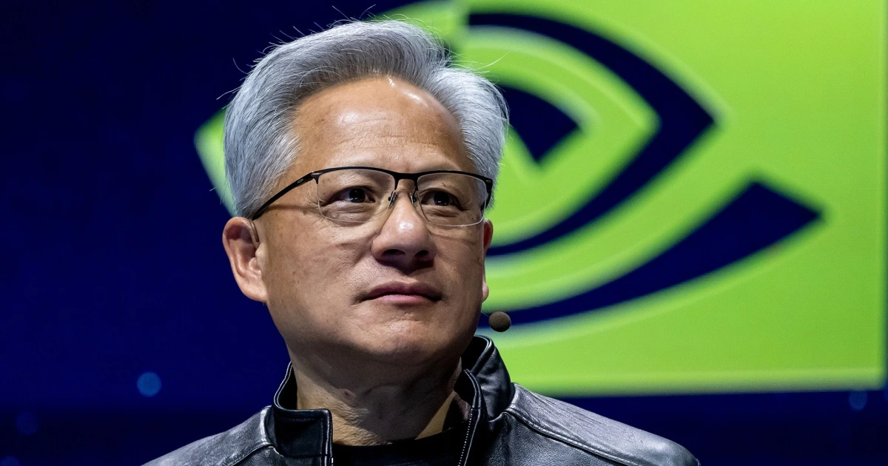
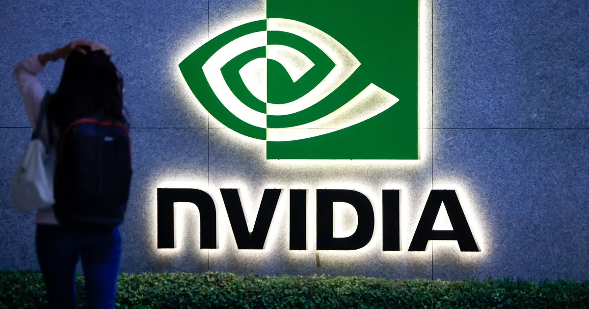

INVESTMENT IMPLICATION
What it means for investors
Multiples compress across semiconductor equities; AI infrastructure buildout plans face scrutiny over China exposure and key-person risk, while software IPO appetite remains selectively robust.
GLOBAL EDITION / SECTOR INTELLIGENCE
Severe selloff and governance shock triggered by Jensen Huang's resignation, Chinese espionage inquiries, and DOJ investigation into Nvidia, compounded by global Microsoft outages.
INVESTMENT IMPLICATION
Multiples compress across semiconductor equities; AI infrastructure buildout plans face scrutiny over China exposure and key-person risk, while software IPO appetite remains selectively robust.
SUPPORTING REPORTING
Reporting cited by this sector view, with source context and original publisher links.

